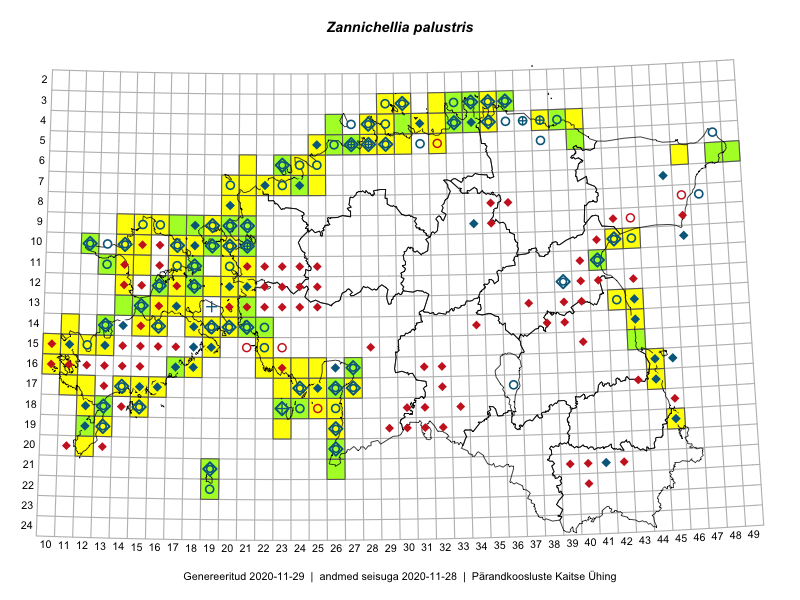

Zannichellia palustris
Uuendatud: 2016-12-07
Kaardile koondatud taksonid: Zannichellia palustris L.

Kaart põhineb 38 vaatlusel. Taime on leitud 29 ruudust.
| Ruut | Vaatleja(d) | Vaatlusaeg | Kirje tüüp | Viide andmebaasikirjele |
|---|---|---|---|---|
| 13-15 | Toomas Kukk, Eerik Leibak | 2015-08-09 | ruut/ala | vaata PlutoFis |
| 13-15 | Toomas Kukk, Eerik Leibak | 2015-08-09 | punkt | vaata PlutoFis |
| 09-17 | Toomas Kukk, Eerik Leibak | 2015-08-12 | ruut/ala | vaata PlutoFis |
| 09-17 | Toomas Kukk, Eerik Leibak | 2015-08-12 | punkt | vaata PlutoFis |
| 09-14 | Toomas Kukk, Eerik Leibak | 2015-08-10 | punkt | vaata PlutoFis |
| 13-14 | Toomas Kukk, Eerik Leibak | 2015-08-10 | ruut/ala | vaata PlutoFis |
| 13-15 | Toomas Kukk, Eerik Leibak | 2015-08-10 | ruut/ala | vaata PlutoFis |
| 16-10 | Mari Reitalu, Oliver Parrest | 2015-08-04 | ruut/ala | vaata PlutoFis |
| 17-12 | Mari Reitalu, Triin Reitalu | 2015-07-22 | ruut/ala | vaata PlutoFis |
| 16-11 | Triin Reitalu, Mari Reitalu | 2015-08-09 | ruut/ala | vaata PlutoFis |
| 17-11 | Mari Reitalu, Triin Reitalu | 2015-08-05 | ruut/ala | vaata PlutoFis |
| 17-11 | Triin Reitalu, Mari Reitalu | 2015-08-05 | punkt | vaata PlutoFis |
| 16-11 | Mari Reitalu, Triin Reitalu | 2015-08-09 | ruut/ala | vaata PlutoFis |
| 11-20 | Hanna-Eliisa Luts, Tõnu Ploompuu | 2015-08-13 | ruut/ala | vaata PlutoFis |
| 09-21 | Kadi-Liis Kesler, Tõnu Ploompuu | 2015-07-14 | ruut/ala | vaata PlutoFis |
| 10-21 | Tõnu Ploompuu | 2015-08-21 | ruut/ala | vaata PlutoFis |
| 09-18 | Toomas Kukk, Sander Laherand | 2016-07-07 | ruut/ala | vaata PlutoFis |
| 15-19 | Mari Reitalu, Triin Reitalu | 2016-06-30 | ruut/ala | vaata PlutoFis |
| 11-18 | Sander Laherand, Peedu Saar, Nele Jõessar | 2016-08-08 | ruut/ala | vaata PlutoFis |
| 05-29 | Toomas Kukk, Sander Laherand | 2016-08-29 | ruut/ala | vaata PlutoFis |
| 04-31 | Sander Laherand, Toomas Kukk | 2016-08-31 | ruut/ala | vaata PlutoFis |
| 20-26 | Sirje Azarov, Indrek Tammekänd | 2016-07-18 | ruut/ala | vaata PlutoFis |
| 21-19 | Meeli Mesipuu, Ott Luuk | 2016-09-10 | ruut/ala | vaata PlutoFis |
| 22-19 | Ott Luuk, Meeli Mesipuu | 2016-09-10 | ruut/ala | vaata PlutoFis |
| 20-12 | Mari Reitalu, Sirje Azarov | 2016-08-08 | ruut/ala | vaata PlutoFis |
| 15-19 | Mari Reitalu, Triin Reitalu | 2016-06-30 | punkt | vaata PlutoFis |
| 18-24 | Peedu Saar, Ott Luuk | 2016-09-21 | ruut/ala | vaata PlutoFis |
| 13-16 | Peedu Saar, Ott Luuk | 2016-08-31 | ruut/ala | vaata PlutoFis |
| 16-17 | Peedu Saar, Ott Luuk | 2016-09-01 | ruut/ala | vaata PlutoFis |
| 19-23 | Ott Luuk, Peedu Saar | 2016-09-21 | ruut/ala | vaata PlutoFis |
| 18-23 | Ott Luuk, Peedu Saar | 2016-09-21 | ruut/ala | vaata PlutoFis |
| 09-18 | Ott Luuk, Meeli Mesipuu | 2016-09-16 | ruut/ala | vaata PlutoFis |
| 10-19 | Ott Luuk, Meeli Mesipuu | 2016-09-15 | ruut/ala | vaata PlutoFis |
| 19-12 | Ott Luuk, Peedu Saar | 2016-10-07 | ruut/ala | vaata PlutoFis |
| 22-19 | Meeli Mesipuu, Ott Luuk | 2016-09-11 | punkt | vaata PlutoFis |
| 09-18 | Meeli Mesipuu, Ott Luuk | 2016-09-16 | punkt | vaata PlutoFis |
| 14-13 | Meeli Mesipuu, Toomas Kukk, Mari Reitalu | 2016-10-06 | punkt | vaata PlutoFis |
| 04-39 | Hannes Pehlak, Toomas Kukk, Susanna Vain | 2016-07-28 | ruut/ala | vaata PlutoFis |